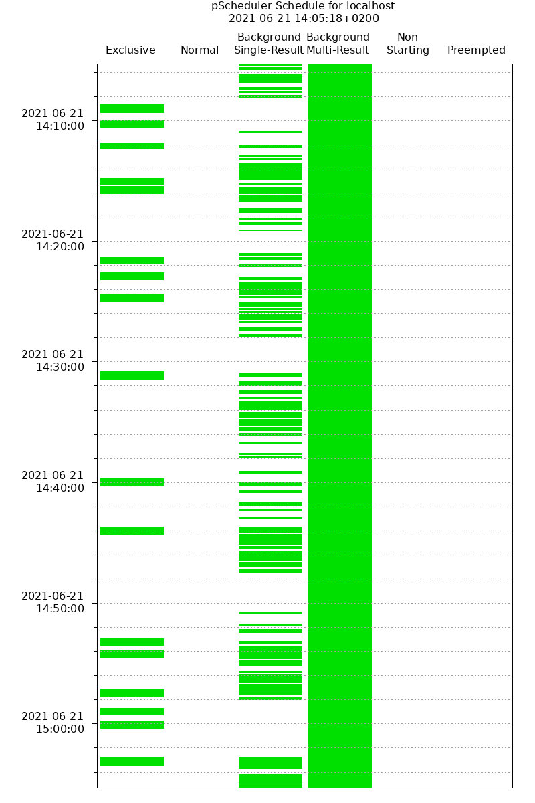
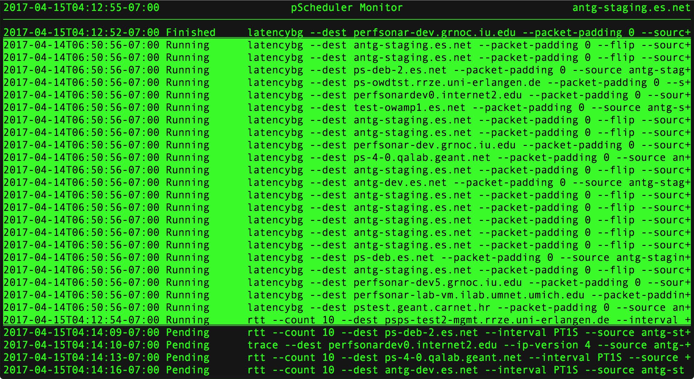

Viewing the Schedule¶
Introduction¶
It is often desirable to view the pScheduler schedule to plan new tests, debug a problem or just see how busy a host is at a particular time. The pscheduler command-line client includes the following commands to provide this visibility:
pscheduler schedule- This command outputs the schedule in the requested timeframe as text. See Viewing the Schedule as Text with pscheduler schedule.
pscheduler plot-schedule- This command creates a PNG image file that provides a box plot of the schedule. See Visualizing the Schedule with pscheduler plot-schedule.
pscheduler monitor- This command provides top-like output showing near real-time state of runs in the database. See Monitoring the Schedule in Real Time with pscheduler monitor.
The Basics¶
pScheduler maintains a schedule in the database and this schedule can be queried. Having some base knowledge of how pScheduler maintains its schedule can go a long way in understanding what is seen when you query the schedule.
Every time a task is created, one or more runs are scheduled. Runs are scheduled 24 hours in advance by default (this is known as the schedule horizon). This means that you can not only see what has run in the past and what is running in the present, but also exactly when pScheduler will attempt a run in the future.
Runs also have a status depending on whether they have already run or are still waiting to do so. Possible status values are:
Pending - This run is scheduled to execute at some point in the future
On Deck - This run is scheduled to execute and will begin execution very soon
Running - This run is on the verge of executing or has started execution
Cleanup - This run completed execution and is doing some final operations
Finished - The run has already executed and finished successfully
Overdue - The run was scheduled to execute at a certain time in the past but did not. It may get executed soon if it is not beyond a certain threshold.
Missed - The run was scheduled but did not execute at it’s given time. This can happen if the runner was not running at the scheduled time or the pScheduler was instructed to stop executing runs using the pause command.
Failed - The run failed to complete for some reason
Non-Starter - The run could not be scheduled because there was no timeslots that could accomodate the constraints
Canceled - The task was cancelled before the run was executed
The information above should be enough background to get started looking at the output of pScheduler commands.
Viewing the Schedule as Text with pscheduler schedule¶
This pscheduler schedule command asks pScheduler to fetch scheduled task runs from the past, present or future and display them as text. It takes the following form:
pscheduler schedule [ OPTIONS ] [ delta | start end ]
It outputs a list of runs that take the form below (where items in capital letters are replaced with values of the displayed run):
START - END (STATUS)
PSCHEDULER_TASK_COMMAND (Run with tool TOOL)
RUN_URL
This is best shown with an example. All runs for the next hour will be displayed if no arguments are given:
% pscheduler schedule
2017-04-14T19:53:55-07:00 - 2017-04-14T19:53:55-07:00 (Finished)
trace --dest host2 --ip-version 4 --source host1 (Run with
tool 'traceroute')
https://host1/pscheduler/tasks/0d545908-ff87-4b34-986f-b94afda74b16/runs/b26460b2-8edf-499c-ad34-a4c358f5279d
2017-04-14T19:54:05-07:00 - 2017-04-14T19:54:05-07:00 (Finished)
trace --dest host3 --ip-version 4 --source host1 (Run
with tool 'traceroute')
https://host1/pscheduler/tasks/cd93bf0a-ebd3-4a86-bbd0-ff5adfdac118/runs/8b780de3-9fad-445d-8dac-4dfd99f16c3f
2017-04-14T19:54:15-07:00 - 2017-04-14T19:54:20-07:00 (Finished)
trace --dest host1 --ip-version 4 --source host2 (Run
with tool 'traceroute')
https://host2/pscheduler/tasks/a07cdaa6-624b-4128-9821-0b2dc9c2b760/runs/2cd5e548-dff9-44d8-8475-b38791e2d5a5
The runs displayed will include any task where your host is a participant, not just the lead participant.
With one (delta) argument, the schedule between now and some point in the past or future will be shown. Deltas are ISO 8601 durations, with -PT1H meaning one hour in the past and P1D meaning one day in the future. Examples:
One hour in the past:
pscheduler schedule -PT1HOne day in the future:
pscheduler schedule P1D
With two (start and end) arguments, the schedule within a range of times will be shown. Either argument can be a delta as described above (e.g. -P2D) or a ISO 8601 timestamp (e.g., 2016-09-04T12:34:56+0400). Examples:
One hour in the past to two hours in the future:
pscheduler schedule -PT1H PT2HOne hour timeframe between two specific times:
pscheduler schedule 2016-09-04T12:34:56+0400 2016-09-04T13:34:56+0400
It also provides the --filter-test TEST_TYPE option to ask for a particular test type. For a list of test types see Test and Tool Reference. For example, you may ask for all the throughput tests scheduled in the next hour with:
pscheduler schedule --filter-test throughput PT1H
You may specify --filter-test multiple times to query multiple types of tests. For example, the following queries all trace and rtt tests that ran in the last 30 minutes:
pscheduler schedule --filter-test trace --filter-test rtt -PT30M
You may also ask for all tests that are NOT a certain type by using the --invert option. This can be especially useful for ignoring background tasks that generally don’t prevent other tasks from running at the same time. For example, you could ignore all latencybg tests with:
pscheduler schedule --filter-test latencybg --invert
Any of the commands above can also be run to a remote pScheduler server using the --host HOST option, where HOST is the address of the pScheduler server with the schedule you’d like to see. For example, to see the schedule for the last hour of the pScheduler server on host2 you would run:
pscheduler schedule --host host2 -PT1H
If you are curious about any additional options or details, you can also run pscheduler schedule --help to get more information about this command.
Visualizing the Schedule with pscheduler plot-schedule¶
The pscheduler plot-schedule command asks pScheduler to fetch scheduled task runs from the past, present or future and display them as box plot in a PNG image file. It takes the following form where OPTIONS is command-line options and IMAGE_FILE is the location where you want the generated image saved:
pscheduler plot-schedule [ OPTIONS ] [ delta | start end ] > IMAGE_FILE
You always redirect the output to a file and the program will return an error before execution if you do not. Example output is shown below:
The vertical axis is the time that the test ran or is scheduled to run. The green boxes are runs of tasks and their height indicates the time allotted for them on the schedule. Each run is grouped into one of five classifications listed at the top:
Exclusive - An example is a throughput task. If you have very little whitespace in this category then you may have difficulty finding a timeslot for new tests. These test can run in parallel only with background tests.
Normal - An example is a task with a test type of latency.
Background Single-Result - Background tests that produce single result. Example test types include rtt and trace or clock. These tests can run in parallel with anything else.
Background Multi-Result - Background tests that produce multiple (streaming) results. Example test type is latencybg. It is not uncommon to have this column look almost entirely solid if you have latencybg tasks since they run continuously. These tests can run in parallel with anything else.
Non-Starting - These are runs that could not find a time-slot. A very important note, and common point of confusion, is that the time shown is the earliest possible time in the slot it was trying to schedule. This IS NOT the time when the scheduler tried to find a slot, failed and labelled it as a non-start. pScheduler uses a schedule horizon so likely attempted to schedule the run 24 hours in advance. A large number of runs in this category may be the indication of a busy host where it is difficult for exclusive tasks to find a timeslot.
Preempted - These runs were preempted by another with higher priority.
For more detailed information about test classifications see Test Classifications.
The primary options for manipulating what is in the image are the time arguments that take the same form as pscheduler schedule. If no arguments are given, all runs for the next hour will be displayed:
pscheduler plot-schedule
With one (delta) argument, the schedule between now and some point in the past or future will be shown. Deltas are ISO 8601 durations, with -PT1H meaning one hour in the past and P1D meaning one day in the future. Examples:
One hour in the past:
pscheduler plot-schedule -PT1HOne day in the future:
pscheduler plot-schedule P1D
With two (start and end) arguments, the schedule within a range of times will be shown. Either argument can be a delta as described above (e.g. -P2D) or a ISO 8601 timestamp (e.g., 2016-09-04T12:34:56+0400). Examples:
One hour in the past to two hours in the future:
pscheduler plot-schedule -PT1H PT2HOne hour timeframe between two specific times:
pscheduler plot-schedule 2016-09-04T12:34:56+0400 2016-09-04T13:34:56+0400
Any of the commands above can also be run to a remote pScheduler server using the --host HOST option, where HOST is the address of the pScheduler server with the schedule you’d like to see. For example, to see the schedule for the last hour of the pScheduler server on host2 you would run:
pscheduler plot-schedule --host host2 -PT1H
If you are curious about any additional options or details, you can also run pscheduler plot-schedule --help to get more information about this command.
Monitoring the Schedule in Real Time with pscheduler monitor¶
The pscheduler monitor command provides top-like output of what the schedule is doing in near real time. It takes the following form:
pscheduler monitor [ OPTIONS ]
The output displayed looks like the following:
Each row in the table shows a run. The runs are grouped by status and show the following in the columns from left to right:
The time that the task started
The status of the run. If it’s in the Running state it will be highlighted as well.
The command-line parameters one could give to
pscheduler taskto create the run
The most common method for invoking the command is to give it no options and it will fill the screen with as many tasks as it can fit:
pscheduler monitor
If you would like to monitor a pScheduler server on remote host you can add the --host switch as follows:
pscheduler monitor --host host2
If you are curious about any additional options or details, you can also run pscheduler monitor --help to get more information about this command.